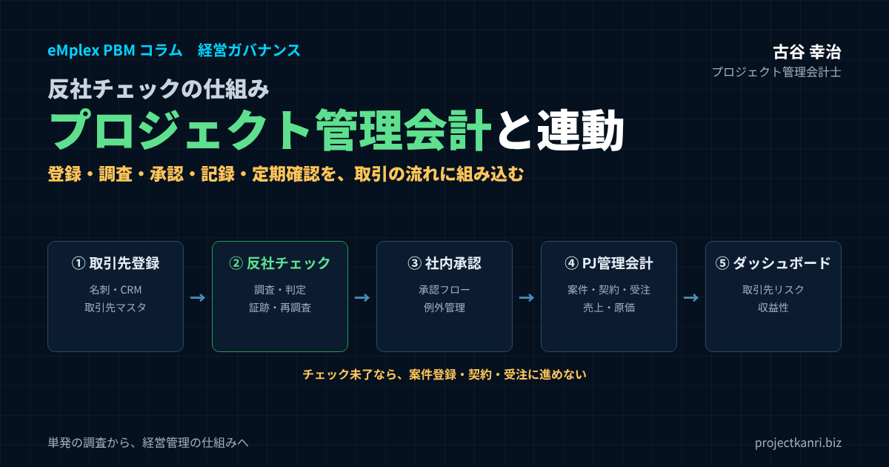

反社チェックの仕組みとは？取引先審査の業務フローとプロジェクト管理会計システムとの連動方法―調査対象・調査方法・判定と承認・記録保存・定期確認、内部統制とIPO準備まで

結論：反社チェックは「単発の調査」ではなく「取引の流れに組み込む仕組み」
この記事のポイント
- 反社チェックは単発の調査ではなく、取引の流れに組み込む仕組み
- 基本フロー：登録→調査→判定・承認→記録保存→定期確認。調査者と承認者を分ける
- 疑義が出たら自動で取引停止せず、追加調査・法務確認・責任者承認へ
- 取引先マスタにチェック状態を持たせ、案件登録・契約・受注・発注を連動制御
- 調査と承認の履歴を一元管理し、内部統制・IPO準備の証跡に
プロジェクト管理会計士の古谷です。上場の準備をご支援していると、必ず話題にのぼるのが反社チェックです。多くの会社は、新しい取引先と契約を結ぶ前に、インターネットの記事の検索や専用のツールで調査を行っています。しかし、その調査の結果がどこに記録され、その後の取引の流れとどうつながっているのかを尋ねると、答えに詰まる会社が少なくありません。
反社チェックの本当の目的は、反社会的勢力との一切の関係を遮断することです。そのためには、取引を始める前に一度調べるだけでは足りません。取引先の登録、案件の受注、契約の締結、外注先への発注、売上の計上、そして取引が続く間の定期的な確認。取引の流れのそれぞれの段階で、チェックが済んでいるかどうかを確かめられる仕組みが必要です。
本記事でお伝えしたいのは、反社チェックを、単独の調査の業務ではなく、取引先の管理、プロジェクトの管理、内部統制をつなぐ経営管理の仕組みとして位置づけるという考え方です。取引先の情報の登録、反社チェック、社内の承認と取引開始の判定、プロジェクト管理会計システムでの案件・契約・受注・売上・原価の管理、そして経営管理のダッシュボードでの取引先のリスクの見える化。この流れを一つの仕組みとしてつなぐことで、チェックの漏れを防ぎ、証跡を確実に残すことができます。
なお、反社チェックの判定や、疑義が生じたときの対応には、法的な判断が関わります。本記事は、仕組みづくりの考え方を実務の視点から整理したものです。具体的な判断や契約の条項については、弁護士や警察、各地の暴力追放運動推進センターなどの専門の窓口に相談してください。
反社チェックは、多くの会社にとって、売上や利益に直接つながらない、守りの業務です。そのため、どうしても後回しにされがちです。しかし、ひとたび反社会的勢力との関係が判明すれば、取引先からの信用、金融機関との関係、上場の計画、そして社員の安全まで、会社が積み上げてきたものを一気に失うおそれがあります。守りの業務だからこそ、人の頑張りに頼らず、仕組みで確実に回すことが大切なのです。
反社チェックとは？企業に求められる理由
反社チェックとは、取引先や株主、役員、従業員などが、暴力団をはじめとする反社会的勢力と関係がないかを確認する取り組みのことです。
企業の取り組みの基本となっているのが、政府が2007年に取りまとめた「企業が反社会的勢力による被害を防止するための指針」です。この指針は、平成19年6月19日に犯罪対策閣僚会議の幹事会で申し合わされたもので、暴力団が組織の実態を隠し、企業活動を装うなど不透明化を進めていることから、暴力団の排除の意識の高い企業であっても、暴力団関係企業などと知らずに結果的に経済取引を行ってしまう可能性があると指摘し、反社会的勢力との関係の遮断の取り組みを一層進める必要性を示しています。
指針はまた、コンプライアンスを重視する流れの中で、反社会的勢力に屈することなく法律に則して対応することや、反社会的勢力に資金を提供しないことは、コンプライアンスそのものであるとも言える、と述べています。
| 理由 | 内容 |
|---|---|
| 政府指針 | 反社会的勢力との関係遮断の取り組みを企業に求める（平成19年6月） |
| 暴力団排除条例 | 各都道府県の条例で、事業者に利益供与の禁止や相手方の確認などを求める |
| 取引・金融 | 金融機関・大企業・官公庁との取引で体制が問われる |
| 上場審査 | 反社会的勢力との関係がないことと、そのための体制が確認される |
| 企業の信用 | 関係が判明すれば、取引停止や信用の失墜につながる |
これに加えて、各都道府県では暴力団排除条例が定められ、事業者に対して、暴力団などへの利益の供与の禁止や、契約の相手方の確認などの努力が求められています。金融機関との取引、上場の審査、大企業や官公庁との取引の場面でも、反社会的勢力との関係がないことの確認と、そのための体制が問われます。反社チェックは、もはや一部の業界だけの取り組みではなく、事業を営むすべての会社に求められる基本の管理の一つになっています。
反社会的勢力とは：属性と行為の二つの視点
反社チェックで何を確認するのかを明確にするために、反社会的勢力とは何かを整理しておきましょう。
反社会的勢力を判断するときには、一般に二つの視点があります。一つは、相手が誰であるかという属性に着目する視点です。暴力団、暴力団員、暴力団の関係企業、総会屋など、相手の属性が反社会的勢力にあたるかどうかを確認します。もう一つは、相手が何をするかという行為に着目する視点です。暴力的な要求、法的な責任を超えた不当な要求、脅迫的な言動などの行為があるかどうかを確認します。
| 視点 | 内容の例 |
|---|---|
| 属性 | 暴力団、暴力団員、暴力団関係企業、総会屋などにあたるか |
| 行為 | 暴力的な要求、法的責任を超えた不当な要求、脅迫的な言動などがあるか |
具体的な定義は契約の暴排条項や社内規程で定め、専門家の助言を参考にしてください。
契約書の暴力団排除条項でも、この二つの視点の両方を定めることが一般的です。相手の属性が反社会的勢力にあたる場合と、相手が暴力的な要求などの行為を行った場合の、どちらでも契約を解除できるようにしておくことで、排除の実効性が高まります。
反社会的勢力は、組織の実態を隠し、通常の企業活動を装って取引の関係を築こうとすることがあります。だからこそ、相手の表向きの姿だけで判断せず、調査と記録の仕組みによって、確認を積み重ねることが大切です。
反社チェックの調査対象：誰を調べるのか
反社チェックの対象は、取引先だけではありません。会社と関係を持つ、さまざまな相手が対象になります。
| 対象 | タイミングの例 | 注意点 |
|---|---|---|
| 顧客（取引先） | 取引開始時・定期 | 代表者・役員も確認 |
| 外注先・協力会社・再委託先 | 発注前・定期 | 現場発注で漏れやすい |
| 仕入先・支払先 | 取引開始時・定期 | 経理の支払先登録と連動 |
| 代理店・業務提携先 | 契約前・定期 | 紹介を受けた相手も対象 |
| 株主 | 株主の異動・資金調達時 | 上場準備では特に重要 |
| 役員・従業員 | 選任・採用時 | 誓約書の取得など |
とくに見落とされやすいのが、外注先や協力会社、再委託先です。プロジェクト型ビジネスでは、プロジェクトのたびに新しい外注先と取引を始めることが多く、営業の部門が管理する顧客のチェックは行っていても、現場が発注する外注先のチェックが漏れている、ということがよくあります。
法人を調べるときは、会社そのものだけでなく、代表者や役員、場合によっては主要な株主も確認します。会社の名前で検索して何も出てこなくても、代表者の名前で検索すると情報が見つかることがあるからです。
従業員や役員の採用のときの確認も、会社の内部の体制として大切です。採用の際に、反社会的勢力との関係がないことを誓約書で確認する会社が多いでしょう。
調査の対象をどこまで広げるかは、会社の規模や業種、取引の形によって異なります。大切なのは、対象の範囲を規程で明確に定め、その範囲について漏れなくチェックを行うことです。範囲を広げすぎて運用が回らなくなるよりも、定めた範囲を確実に運用するほうが、仕組みとしての信頼性は高まります。
反社チェックの調査方法
反社チェックの調査の方法には、いくつかの段階があります。取引の重要度やリスクに応じて、組み合わせて使います。
| 方法 | 内容 | 使い分け |
|---|---|---|
| 記事・ウェブ検索 | 社名・代表者名と注意語を組み合わせて検索 | 全件の基本 |
| 専用ツール | 記事データベースの検索を自動化、結果を記録 | 件数が多い場合 |
| 商業登記の確認 | 設立時期、役員・商号・本店の変遷 | 新規・重要取引 |
| 信用調査会社 | 企業情報・評判の調査 | 大型・長期取引、疑義時 |
| 警察・暴追センター等への相談 | 専門機関への相談 | 疑わしい情報がある場合 |
最も基本的なのは、インターネットや新聞の記事のデータベースを使った検索です。会社の名前や代表者の名前と、「暴力団」「逮捕」「詐欺」「行政処分」といった言葉を組み合わせて検索し、問題のある記事がないかを確認します。手作業で行うと時間がかかり、担当者によって検索の仕方がばらつくため、近年は、検索を自動化する専用のツールを使う会社が増えています。
商業登記の情報の確認も大切です。会社の設立の時期、役員の変遷、本店の所在地の移転の頻度、事業の目的の変更などから、不自然な点がないかを確認します。短い期間に役員や商号、本店が頻繁に変わっている会社は、注意が必要な場合があります。
記事の検索や登記の確認で疑わしい点が見つかった場合は、信用調査会社への調査の依頼や、警察、各地の暴力追放運動推進センターへの相談を検討します。疑わしいかどうかの判断を、担当者が一人で抱え込まないことが大切です。
調査の方法を選ぶときには、調査の結果をどのように記録に残すかも合わせて考えておきましょう。インターネットの検索であれば、検索の日時、使った言葉、結果の画面の写しを残す。専用のツールであれば、ツールが出力する調査の結果の記録を保存する。調査の方法と記録の方法がセットになっていなければ、後から調査を行ったことを証明できません。
反社チェックの基本的な業務フロー
反社チェックを仕組みとして運用するためには、誰が、いつ、何を、どのように行うのかを、業務のフローとして決めておく必要があります。基本的なフローは、次の五つのステップです。
| ステップ | 内容 | 主な担当 |
|---|---|---|
| ① 新規取引先の登録 | 登録申請、取引先マスタへの一元登録（法人番号） | 申請部門→管理部門 |
| ② 調査 | リスクに応じた深さで調査 | 管理部門（調査担当） |
| ③ 確認・判定・承認 | 結果の確認、取引開始の承認、疑義時のエスカレーション | 上長・管理部門責任者・法務 |
| ④ 記録の保存 | 調査・判定・承認の記録を取引先にひもづけて保存 | 管理部門 |
| ⑤ 定期確認 | 継続取引先の再調査、変更時の再調査 | 管理部門 |
このフローのポイントは、調査を行う人と、判定し承認する人を分けることです。営業の担当者が自分で調査し、自分で問題なしと判断して取引を始めてしまうと、チェックの客観性が保てません。調査は担当者や管理の部門が行い、結果の判定と取引の開始の承認は、上長や管理の部門の責任者が行う。この役割の分担が、内部統制の基本です。
以下、それぞれのステップを詳しく見ていきます。
業務フローを図にして、関係する部門に共有しておくこともおすすめします。営業の部門、プロジェクトの現場、経理の部門、法務の部門が、それぞれフローのどこに関わり、どの時点で何をすべきかが一目で分かれば、申請の漏れや手続きの停滞を防ぐことができます。フローの図は、新しく入社した社員への説明や、上場の審査での説明の資料としても役立ちます。
ステップ①：新規取引先の登録
反社チェックの起点は、新しい取引先の登録です。取引先の情報を、会社の取引先マスタに登録する時点で、反社チェックの手続きを始めます。
大切なのは、取引先マスタへの登録の窓口を一本にすることです。営業の部門が顧客を、現場の部門が外注先を、経理の部門が支払先を、それぞれ別々に登録していると、どの取引先のチェックが済んでいるのかが分からなくなります。取引先の登録は、所定の申請の手続きを経て、管理の部門が一元的に行う。この一本化が、チェックの漏れを防ぐ第一歩です。
登録の申請の際には、会社の名前、所在地、代表者の名前、法人番号、取引の内容、取引の予定の金額などを記入してもらいます。法人番号を必ず登録しておくと、表記のゆれによる重複の登録を防ぎ、同じ会社かどうかを確実に判定できます。
名刺を起点に取引先の情報を集めている会社であれば、名刺のデータから取引先マスタに登録する際に、反社チェックの状態を合わせて管理すると効率的です。名刺の情報と取引先マスタ、そして反社チェックの状態がつながっていれば、営業の担当者は、商談を進める前に、相手の会社のチェックが済んでいるかを確認できます。
取引先の登録の申請の様式には、反社会的勢力との関係がないことの表明と確約の欄を設けておくのも一つの方法です。取引の開始の際に、相手から表明と確約の書面を受け取っておけば、後に相手が反社会的勢力であることが判明した場合の、契約の解除の根拠を補強することができます。
ステップ②：反社会的勢力に関する調査
取引先の登録の申請を受けたら、反社会的勢力との関係がないかを調査します。調査の方法と範囲は、取引の内容とリスクに応じて決めておきます。
| 区分 | 取引の例 | 調査の範囲 |
|---|---|---|
| 簡易 | 少額・単発の取引 | 法人・代表者の記事検索 |
| 標準 | 継続的な取引、一般的な外注 | 記事検索＋登記の確認＋役員の確認 |
| 詳細 | 大型・長期の取引、資本提携、株主 | 標準＋信用調査会社の調査など |
基準は会社のリスクに応じて規程で定めます。
すべての取引先に同じ深さの調査を行うのは、現実的ではありません。少額で一回限りの取引と、長期にわたる大型の取引とでは、リスクが違います。取引の金額、期間、内容、相手の業種などに応じて、調査の深さを段階に分けておくと、限られた人員で効率よくチェックを運用できます。
調査の担当者が迷わないように、検索に使う言葉、確認する情報の範囲、調査の結果の記録の様式を、マニュアルで統一しておきましょう。担当者によって調査の仕方が違うと、同じ会社を調べても結果が変わってしまいます。
調査の担当者には、調査の目的と、反社会的勢力の手口についての基本的な知識を、研修などで伝えておくことも大切です。反社会的勢力は、実態を隠して通常の企業を装うことがあります。検索の結果を機械的に確認するだけでなく、設立から間もない会社が大きな取引を求めてくる、事業の実態がよく分からない、といった違和感に気づけるかどうかが、調査の質を左右します。
ステップ③：調査結果の確認・判定・承認
調査の結果を確認し、取引を始めてよいかを判定し、承認します。ここが、反社チェックの仕組みの中で最も判断が求められるステップです。
調査で何も見つからなかった場合は、上長や管理の部門の責任者が結果を確認し、取引の開始を承認します。承認の記録は、誰が、いつ、どの調査の結果にもとづいて承認したのかが分かる形で残します。
問題は、調査で疑わしい情報が見つかった場合です。同姓同名の別人の記事かもしれませんし、過去の古い情報かもしれません。逆に、本当に注意すべき情報かもしれません。この段階で大切なのは、担当者がその場で自動的に取引を停止すると判断するのではなく、追加の調査、法務の部門による確認、責任者による判断へとつなげる設計にしておくことです。
| 段階 | 内容 |
|---|---|
| 1 事実の確認 | 同姓同名・同名異社でないか、情報の時期と内容 |
| 2 追加調査 | 登記・信用調査会社などで追加確認 |
| 3 法務の確認 | 法務部門・弁護士による確認 |
| 4 責任者の判断 | 管理部門責任者・経営陣による判断（必要に応じ外部相談） |
| 5 記録 | 判断の過程と結論を記録 |
疑義の案件の判断は、営業の部門だけで行わないことが重要です。営業の部門には、取引を進めたいという動機があります。判断は、管理の部門や法務の部門、必要に応じて経営陣が関わり、外部の専門家にも相談しながら行います。判断の過程と結論は、すべて記録に残しておきます。
承認の判断の基準も、できるだけ具体的に決めておきましょう。どのような情報が見つかった場合に「要確認」とするのか、どのような場合に追加の調査を行うのか、最終的に誰が取引の可否を判断するのか。基準が明確であれば、担当者は迷わずに次の手続きに進むことができ、判断のばらつきも防げます。
ステップ④：調査記録の保存
反社チェックは、行ったことを証明できなければ、行っていないのと同じです。調査の記録を、確実に保存しておく必要があります。
| 項目 | 内容 |
|---|---|
| 対象 | 取引先名・法人番号・代表者・役員 |
| 調査 | 調査日・担当者・方法・範囲・検索語 |
| 結果 | 結果の概要、画面の写し・検索結果の一覧 |
| 判定・承認 | 判定内容、承認者、承認日 |
| 次回 | 次回の再調査の予定日 |
記録には、調査の日付、調査の担当者、調査の方法と範囲、検索した言葉、調査の結果、判定の内容、承認者と承認の日付を残します。調査の結果の画面の写しや、検索の結果の一覧も、証跡として保存しておくと安心です。
記録の保存で問題になりやすいのは、記録が担当者のパソコンや、個人のメールの中に散らばっていることです。担当者が異動したり退職したりすると、記録の所在が分からなくなります。記録は、取引先マスタにひもづけて、会社の共通の仕組みの中に保存しておくことが大切です。上場の審査や監査の際に、特定の取引先のチェックの記録を求められたときに、すぐに取り出せる状態にしておきましょう。
記録の保存の期間も、規程で定めておきましょう。取引が終わった後も、一定の期間は記録を保存しておく必要があります。取引の終了後に、過去の取引の経緯を確認する必要が生じることもあるからです。保存の期間は、会社の文書の管理の規程や、法令の定め、監査の要請などを踏まえて決めてください。
ステップ⑤：継続取引先の定期確認
反社チェックは、取引を始めるときに一度行えば終わりではありません。取引を始めた後に、取引先の役員や株主が変わり、反社会的勢力との関係が生じることもあるからです。
| 場面 | 対応 |
|---|---|
| 定期 | 年1回など、取引のリスクに応じた頻度で再調査 |
| 変更時 | 代表者・役員・商号・本店の変更を知ったとき |
| 取引拡大時 | 取引金額・内容が大きく変わるとき |
| 管理 | 取引先マスタに前回調査日・次回予定日を持たせ、期限を自動抽出 |
継続して取引のある取引先については、年に一度など、定期的に再調査を行います。取引先の数が多い場合は、取引の金額やリスクに応じて、再調査の頻度を変えることもできます。また、取引先の代表者の変更、商号の変更、本店の移転といった変化を知ったときには、定期の確認を待たずに再調査を行います。
定期の確認で漏れが起きやすいのは、再調査の対象と時期を、担当者の記憶や表計算のソフトで管理している場合です。取引先マスタに、前回の調査の日付と、次回の調査の予定の日付を持たせ、期限が近づいた取引先を自動的に一覧にする仕組みがあれば、漏れを防ぐことができます。
再調査の結果、取引の開始のときには問題がなかった取引先に、疑わしい情報が見つかることもあります。その場合も、新しい取引先の場合と同じように、追加の調査、法務の確認、責任者の判断へとつなげます。進行中の案件や契約がある場合は、契約の暴排条項にもとづく対応を含めて、専門家と相談しながら慎重に判断します。
契約書の暴力団排除条項
反社チェックと並んで、反社会的勢力との関係の遮断に欠かせないのが、契約書の暴力団排除条項、いわゆる暴排条項です。
暴力団排除条項とは、契約書や取引の約款などの中に設けられる条項で、暴力団などの反社会的勢力が取引の相手方となることを拒絶する旨を定めるとともに、取引を始めた後に相手方が反社会的勢力であることを知った場合には、契約を解除して取引から排除できること、そしてその場合に損害賠償の義務を負わないことを定めた条項です。
典型的には、契約の当事者が反社会的勢力でないことをあらかじめ相互に確約すること、そして、契約の後に相手が反社会的勢力であることが判明した場合などに、契約の解除などの対応が速やかにできることが定められます。
反社チェックで事前に確認していても、相手が実態を隠している場合、調査では見抜けないこともあります。暴排条項は、そうした場合に取引から確実に離脱するための、いわば最後の安全装置です。顧客との契約、外注先との契約、業務の委託の契約など、すべての契約書に暴排条項が入っているかを確認し、契約の雛形に必ず組み込んでおきましょう。条項の具体的な文言は、業界団体のモデル条項や、弁護士の助言を参考に決めてください。
不当な要求を受けたときの対応
反社チェックは、反社会的勢力との取引を未然に防ぐための取り組みですが、それでも、取引の後に不当な要求を受けることがあり得ます。そのときの対応の方針も、あらかじめ決めておく必要があります。
政府の指針では、反社会的勢力による被害を防止するための基本的な考え方として、組織として対応すること、外部の専門の機関と連携すること、取引を含めた一切の関係を遮断すること、有事には民事と刑事の両面から法的に対応すること、裏取引や資金の提供を行わないこと、といった原則が示されています。
実務では、不当な要求を受けたときに、担当者が一人で対応しないことが最も大切です。要求を受けたら、すぐに上長と管理の部門に報告し、対応の窓口を一本にします。やりとりの記録を残し、必要に応じて警察や弁護士、暴力追放運動推進センターに相談します。担当者が一人で抱え込んでしまうと、相手の要求に応じてしまったり、身の危険にさらされたりするおそれがあります。
こうした対応の手順を、規程とマニュアルに書いておき、社員に周知しておきましょう。とくに、顧客と直接接する営業の担当者や、プロジェクトの現場の担当者には、不当な要求を受けたときの報告の手順を、研修などで伝えておくことが大切です。
反社チェックの運用で発生する課題
反社チェックの仕組みを整えても、運用の段階でさまざまな課題が生じます。多くの会社で見られる課題を整理します。
| 課題 | 起きること |
|---|---|
| 登録窓口が分散 | 顧客・外注先・支払先が別々に登録され、チェック済みか分からない |
| 現場発注の漏れ | プロジェクトの外注先がチェックされないまま発注 |
| 記録の散在 | 記録が担当者のPCやメールに散らばる |
| 再調査の漏れ | 継続取引先の定期確認が行われない |
| 後続業務と非連動 | チェック未了のまま案件・契約・受注が進む |
| 判断の属人化 | 疑義の判断が担当者任せ |
これらの課題の多くは、反社チェックが、取引先の管理やプロジェクトの管理の仕組みと切り離されて、別の業務として行われていることから生まれます。チェックの記録は表計算のソフトに、取引先の情報は会計のシステムに、案件の情報はプロジェクト管理の仕組みに、それぞれ別々に存在している。そのため、チェックが済んでいない取引先との案件が、そのまま進んでしまうのです。
もう一つの課題は、チェックの仕組みが形だけになってしまうことです。調査の担当者が、件数をこなすことに追われ、結果を十分に確認しないまま「問題なし」と記録してしまう。承認者も、調査の結果を見ずに承認してしまう。こうした形骸化を防ぐためには、内部監査などで、調査の記録の中身を定期的に確認することが欠かせません。
反社チェックをシステム化するメリット
反社チェックをシステムで管理することには、大きなメリットがあります。
| メリット | 内容 |
|---|---|
| ① 漏れの防止 | チェック状態を一覧で把握 |
| ② 調査の効率化 | 記事検索の自動化 |
| ③ 証跡の確保 | 調査・承認の記録を確実に保存 |
| ④ 定期確認の自動化 | 再調査の期限を自動で抽出・通知 |
| ⑤ 後続業務との連動 | チェック未了なら案件・契約・受注に進めない |
一つ目は、チェックの漏れを防げることです。取引先マスタにチェックの状態を持たせ、チェックが済んでいない取引先を一覧で確認できるようにすれば、漏れに気づくことができます。
二つ目は、調査の効率化です。記事の検索を自動化するツールを使えば、担当者の手作業の時間を大きく減らせます。取引先の数が多い会社ほど、効果は大きくなります。
三つ目は、証跡が確実に残ることです。調査の結果と承認の記録がシステムに残っていれば、監査や上場の審査で求められたときに、すぐに示すことができます。
四つ目は、定期の確認の自動化です。再調査の期限が近づいた取引先を自動的に抽出し、担当者に知らせる仕組みがあれば、定期の確認の漏れを防げます。
そして五つ目が、後続の業務との連動です。これが、本記事で最もお伝えしたいポイントです。次の章で詳しく述べます。
反社チェックツールの選び方
反社チェックの調査を効率化するために、専用のツールを導入する会社が増えています。ツールを選ぶときに確認しておきたいポイントを整理します。
| ポイント | 確認すること |
|---|---|
| 情報源 | どの記事データベース・情報を検索するか |
| 検索の精度 | 同姓同名の絞り込み、注意語の設定 |
| 一括検索 | 複数の取引先をまとめて調査できるか |
| 記録の保存 | 調査結果・日時を証跡として残せるか |
| 定期確認 | 再調査の自動化・通知 |
| 連携 | API・CSVで取引先マスタやプロジェクト管理と連携できるか |
| 費用 | 件数・利用者数に応じた料金 |
ツールを選ぶときに見落としがちなのが、他の仕組みとの連携です。ツールで調査した結果を、取引先マスタやプロジェクト管理の仕組みに手作業で転記していては、連動の効果が十分に得られません。APIやCSVでのデータの連携ができるか、調査の結果を取引先の単位で取り込めるかを確認しておきましょう。
また、ツールはあくまで調査を効率化するための道具であり、判定と承認は人が行うものです。ツールで何も見つからなかったことが、反社会的勢力との関係がないことを保証するわけではありません。ツールの結果を、どのような基準で判定し、誰が承認するのかという運用のルールとセットで導入することが大切です。
プロジェクト管理会計システムとの連動方法
反社チェックを本当の意味で機能させるためには、反社チェックの結果を、取引先の登録から、案件の登録、契約、受注、発注、売上、支払いまでの一連の業務とつなげる必要があります。プロジェクト型ビジネスの会社であれば、その中心にあるのが、プロジェクト管理会計のシステムです。
| 段階 | 内容 | 仕組み |
|---|---|---|
| ① 取引先情報の登録 | 名刺・CRM・取引先マスタへの登録 | 法人番号で一元化、状態＝未調査 |
| ② 反社チェック | 調査・判定・証跡保存・再調査 | 調査ツール、記録の保存 |
| ③ 社内承認・取引開始判定 | 承認ワークフロー・例外管理 | 調査者と承認者の分離 |
| ④ プロジェクト管理会計 | 案件登録・契約・受注・発注・売上・原価 | チェック状態による後続業務の制御 |
| ⑤ 経営管理ダッシュボード | 取引先リスク・案件状況・収益性の可視化 | 完了率・期限切れ・取引額の一覧 |
この連動のモデルで特に重要なのは、反社チェックが済んでいない取引先、あるいは承認が済んでいない取引先について、案件の登録、契約の締結、受注の処理といった後続の業務を進められないように制御する仕組みです。チェックを「行うべきもの」として運用するのではなく、チェックが済まなければ「先に進めない」仕組みにする。これが、チェックの漏れを根本からなくす方法です。
以下、連動の具体的なポイントを五つに分けて説明します。
連動①：取引先マスタとの連携
連動の土台は、取引先マスタです。取引先マスタに、反社チェックの状態、つまり未調査、調査中、問題なし、要確認、取引不可といった状態と、調査の日付、次回の再調査の予定日、承認者を持たせます。
| 項目 | 内容 |
|---|---|
| 法人番号 | 取引先を一意に特定するキー |
| 取引区分 | 顧客・外注先・仕入先・支払先（複数可） |
| 反社チェック状態 | 未調査／調査中／問題なし／要確認／取引不可 |
| 調査日・承認者 | 直近の調査日と承認者 |
| 次回再調査予定日 | 定期確認の期限 |
| 与信の状態 | 与信枠・信用の状態 |
| 暴排条項 | 契約書に暴排条項が含まれているか |
取引先マスタを一つにまとめることも大切です。顧客、外注先、仕入先、支払先が別々のマスタで管理されていると、同じ会社が顧客と外注先の両方に登録されている場合に、片方だけチェックが済んでいる、という状態が起きます。法人番号をキーにして、取引先を一つのマスタで管理し、顧客としての取引も、外注先としての取引も、同じ取引先にひもづけることで、チェックの状態を一元的に管理できます。
名刺管理のサービスと連携している場合は、名刺のデータから取引先マスタに会社を登録する時点で、反社チェックの状態を「未調査」として登録し、調査の手続きを始めるようにすると、入口での漏れを防ぐことができます。
取引先マスタの反社チェックの状態は、システムの上で、色や記号で一目で分かるように表示しておくと便利です。営業の担当者やプロジェクトの担当者が、取引先を選ぶたびに状態を目にすることで、チェックへの意識が自然と高まります。
連動②：案件登録時のチェック
プロジェクト型ビジネスでは、新しい案件、つまりプロジェクトを登録するときが、反社チェックの状態を確かめる重要なタイミングです。
案件を登録するときには、必ず取引先マスタから顧客を選ぶようにし、その顧客の反社チェックの状態を画面に表示します。チェックが済んでいない、あるいは承認が済んでいない顧客の場合は、案件の登録ができないか、少なくとも警告が表示され、管理の部門の確認が必要になるようにしておきます。
見込みの段階の案件については、案件の登録そのものは認めつつ、受注の確度が上がった段階、あるいは見積書を提出する段階で、チェックの完了を必須とする、といった段階的な制御も考えられます。営業の活動を過度に妨げず、それでいて契約の前には必ずチェックが済んでいる状態をつくる。自社の営業のプロセスに合わせて、制御のタイミングを設計することが大切です。
外注先についても同様です。プロジェクトの中で外注先に発注するときに、その外注先のチェックの状態を確認し、チェックが済んでいなければ発注の承認に進めないようにします。プロジェクトの現場で急に外注先が必要になったときにも、チェックを飛ばさずに済むよう、調査の手続きを迅速に回せる体制を整えておきましょう。
見込みの段階の案件と、チェックの状態を組み合わせて見ることで、営業の部門は、商談を進める前にチェックの申請を出すべき取引先を、早めに把握することができます。受注の直前になって慌ててチェックを依頼するのではなく、商談の初期の段階からチェックの手続きを始めておく。この習慣が、営業のスピードとチェックの確実さを両立させます。
連動③：契約・受注承認との連動
契約の締結と受注の承認は、取引を確定させる最後の関門です。ここに反社チェックの確認を組み込みます。
契約書の承認のワークフローの中に、契約の相手方の反社チェックの状態と、契約書に暴排条項が含まれているかの確認の項目を設けます。承認者は、チェックが済み、暴排条項が含まれていることを確認したうえで承認します。チェックが済んでいない場合は、承認のワークフローが先に進まないようにしておくと確実です。
受注の承認も同様です。受注を確定させ、プロジェクトの予算を正式に設定する前に、顧客のチェックの状態を確認します。発注の承認、支払いの承認にも、同じ確認を組み込むことで、取引の入口から出口まで、チェックの状態を確かめる関門を設けることができます。
こうした承認の記録が、承認のワークフローのシステムに残っていれば、内部統制の面でも、上場の審査の面でも、強い証跡になります。
契約の更新のタイミングも、チェックの状態を確認する良い機会です。年に一度の契約の更新の承認の際に、取引先の再調査の結果を合わせて確認するようにすれば、定期の確認を、業務の流れの中で自然に行うことができます。
連動④：チェック履歴・承認履歴の管理
反社チェックの調査の履歴と、取引の開始の承認の履歴、そして案件、契約、受注、発注の承認の履歴を、取引先ごとに一覧で確認できるようにします。
| 履歴 | 内容 |
|---|---|
| 調査履歴 | 初回・定期・変更時の調査結果 |
| 承認履歴 | 取引開始の承認、例外の承認 |
| 業務履歴 | 案件登録、見積、契約承認、受注、発注、支払の承認 |
| 操作ログ | 誰がいつ記録を作成・変更・承認したか |
履歴の管理で大切なのは、記録が改ざんされないことと、後から追跡できることです。誰が、いつ、どの記録を作成し、変更し、承認したのか。システムの操作の記録、いわゆる監査ログが残っていれば、記録の信頼性が高まります。
ある取引先について、最初の反社チェックの結果、取引の開始の承認、その後の案件の登録、契約の承認、受注、発注、そして定期の再調査の結果までが、時系列で一覧になっていれば、監査や上場の審査で取引の経緯を問われたときにも、すぐに説明することができます。
履歴の管理は、取引先の担当者の交代の際にも役立ちます。営業の担当者やプロジェクトの担当者が替わっても、取引先の履歴を見れば、いつ、どのようなチェックが行われ、どのような判断がされてきたのかが分かります。担当者の記憶に頼らない仕組みは、取引先との関係を安定して続けるための基盤にもなります。
連動⑤：プロジェクト別損益・経営ダッシュボードとの連携
反社チェックの情報を、プロジェクト別の損益や、経営管理のダッシュボードとつなげることで、取引先のリスクを経営の視点で見ることができるようになります。
たとえば、取引先ごとの取引の金額、進行中の案件、売掛金の残高と、反社チェックの状態、与信の状態、次回の再調査の予定日を、一つの画面で確認できるようにします。再調査の期限が切れている取引先と、大きな取引が進行している取引先が重なっていれば、優先して再調査を行うべきだと分かります。
| 指標 | 見ること |
|---|---|
| チェック完了率 | 全取引先・新規取引先のチェック完了の割合 |
| 再調査の期限切れ | 期限を過ぎた取引先の件数と一覧 |
| 要確認の取引先 | 疑義のある取引先と対応状況 |
| 取引先別の取引状況 | 取引額・進行中案件・売掛金と、チェック・与信の状態 |
| 例外の件数 | チェック前に作業開始を認めた例外の件数 |
反社チェックは、与信の管理とも密接に関係しています。取引先の信用の状態と、反社会的勢力との関係の有無は、どちらも取引を始めてよいか、続けてよいかを判断するための情報です。両者を一つの取引先マスタで管理し、取引先のリスクとして一体で見ることで、取引先の管理の質は大きく高まります。
経営者にとっては、反社チェックは、普段は意識することの少ない管理かもしれません。しかし、ダッシュボードで、チェックの完了率や、再調査の期限切れの件数を定期的に確認するだけでも、管理の部門の運用に緊張感が生まれ、仕組みの形骸化を防ぐことができます。
ダッシュボードで取引先のリスクを見るときは、反社チェックと与信の状態に加えて、取引の集中の度合いも合わせて見ておくと、取引先の管理の全体像がつかめます。売上の多くを特定の取引先に依存している場合、その取引先のリスクは、会社の経営に直結するからです。
与信管理と反社チェックを一体で運用する
取引先の管理の実務では、反社チェックと与信の管理を、別々の部門や別々の表で管理している会社が少なくありません。しかし、両者は、取引を始めてよいか、続けてよいかを判断するという同じ目的のための情報です。一体で運用することで、取引先の管理の効率と質は大きく高まります。
| 場面 | 反社チェック | 与信管理 |
|---|---|---|
| 取引開始 | 調査・判定・承認 | 信用調査・与信枠の設定 |
| 案件登録・受注 | チェック状態の確認 | 与信枠に対する売掛金・受注残の確認 |
| 定期確認 | 再調査 | 与信の見直し |
| 変化の把握 | 代表者・商号・本店の変更 | 支払遅延・業績悪化 |
たとえば、新しい取引先の登録の申請を受けたときに、反社チェックと与信の調査を同時に始め、両方の結果がそろった段階で、取引の開始と与信の枠を一度に承認する。定期の確認のときにも、反社チェックの再調査と、与信の見直しを同じタイミングで行う。こうすることで、取引先の担当者の手間も、管理の部門の手間も減らすことができます。
プロジェクト型ビジネスでは、大型の案件を受注するときに、顧客の与信の枠を超えた売掛金が発生することがあります。案件の登録や受注の承認の際に、反社チェックの状態と合わせて、与信の枠に対する売掛金と受注の残高の状況を確認できれば、取引先のリスクを一つの画面で判断することができます。
プロジェクト型ビジネスで特に注意したい外注先・協力会社のチェック
建設、システム開発、映像やイベントの制作といったプロジェクト型ビジネスでは、外注先や協力会社、再委託先との取引が多く、反社チェックの対象が広がります。
| ポイント | 内容 |
|---|---|
| 発注前のチェック | 発注の承認に、外注先のチェック状態の確認を組み込む |
| 再委託の管理 | 再委託の事前承認、再委託先の確認を求める条項 |
| 協力会社の網羅 | 現場で取引する協力会社も取引先マスタに登録 |
| 例外の手続き | 急ぎの場合の責任者承認と期限内のチェック完了、記録 |
とくに注意したいのは、再委託の連鎖です。自社が発注した外注先が、さらに別の会社に再委託する。その再委託先が、反社会的勢力と関係していたとしたら、自社の取引が間接的に反社会的勢力の資金源になってしまうおそれがあります。外注先との契約で、再委託の際の事前の承認と、再委託先にも同様の確認を求める条項を設けておくことが大切です。
建設の分野では、公共事業からの暴力団の排除の取り組みとして、入札の参加者から暴力団員などを除外し、下請けや再委託の契約も含めて契約書に暴力団排除条項を盛り込むことが進められてきました。民間の取引においても、元請けとして、協力会社や下請けの会社の確認の体制を整えておくことが求められます。
プロジェクトの現場では、急ぎの案件で、チェックの手続きを待たずに外注先に作業を始めてもらいたい、という要望が出がちです。こうした場面でも例外を認めないことが原則ですが、どうしても必要な場合の例外の手続き、たとえば責任者の承認を得たうえで、一定の期限内にチェックを完了させる、といったルールを決めておき、例外の記録を残しておくことが大切です。
協力会社との関係が長く続いている業種ほど、「昔からの付き合いだから大丈夫」という意識から、チェックが省略されがちです。しかし、長い付き合いの協力会社であっても、経営者の交代や株主の変化は起こり得ます。付き合いの長さにかかわらず、すべての協力会社を同じ基準で定期的に確認することが、自社と協力会社の双方を守ることにつながります。
反社チェックと内部統制の強化
反社チェックは、内部統制の重要な要素の一つです。会社が法令を守り、健全に事業を営むための仕組みの一部として、反社チェックを位置づけることが大切です。
| 要素 | 内容 |
|---|---|
| 方針・規程 | 経営トップの方針、反社会的勢力対応規程 |
| マニュアル | 調査方法・基準・記録様式 |
| 職務の分離 | 調査者と承認者の分離 |
| 承認の手続き | 取引開始・例外の承認 |
| 記録の保存 | 調査・承認の証跡 |
| モニタリング | 内部監査でのサンプルチェック |
内部統制の観点から、反社チェックの仕組みで確認すべきポイントは、規程とマニュアルの整備、職務の分離、承認の手続き、記録の保存、そしてモニタリングです。反社会的勢力への対応の方針を定めた規程があり、その規程に沿ったマニュアルがあり、調査と承認の役割が分かれ、記録が保存され、内部監査などで運用の状況が定期的に確認されている。この状態をつくることが目標です。
内部監査では、取引先マスタからいくつかの取引先を抜き出し、反社チェックの記録と承認の記録が揃っているか、再調査が期限どおりに行われているか、契約書に暴排条項が含まれているかを確認します。問題が見つかれば、原因を確認し、仕組みを改善します。
政府の指針でも、反社会的勢力による被害を防止するための基本的な理念と具体的な対応が示されています。指針の内容を踏まえ、経営トップが反社会的勢力との関係の遮断の方針を明確にし、組織として対応する体制を整えることが、内部統制の土台になります。
部門ごとの役割分担
反社チェックを全社の仕組みとして運用するためには、部門ごとの役割を明確にしておく必要があります。
| 部門 | 役割 |
|---|---|
| 営業部門 | 顧客の登録申請、商談初期の申請、チェック前の契約をしない |
| プロジェクト現場 | 外注先・協力会社の登録申請、チェック前の発注をしない |
| 管理部門 | 取引先マスタの管理、調査、記録の保存、定期確認 |
| 法務部門 | 疑義の確認、契約書の暴排条項、外部専門家との連携 |
| 内部監査 | 運用状況のモニタリング |
| 経営陣 | 方針の明示、状況の確認、疑義案件の最終判断 |
とくに大切なのは、営業の部門とプロジェクトの現場が、反社チェックを自分たちの業務の一部として理解することです。新しい取引先と接点を持つのは、営業の担当者や現場の担当者です。彼らが、取引先の登録の申請を早めに出し、チェックが済むまで契約や発注を進めないという意識を持っていれば、管理の部門のチェックは確実に機能します。
経営陣の役割も欠かせません。反社会的勢力との関係の遮断の方針を、経営トップが明確に示し、反社チェックの状況を定期的に確認する。疑義の案件については、最終の判断に責任を持つ。経営陣が関わることで、反社チェックは、管理の部門だけの業務から、会社全体の取り組みに変わります。
IPO準備企業における反社チェック体制
上場を目指す会社にとって、反社チェックの体制は、上場の審査で必ず確認される項目です。取引先、株主、役員、従業員について、反社会的勢力との関係がないことを確認する体制が整い、実際に運用されていることが求められます。
| □ | 項目 |
|---|---|
| □ | 反社会的勢力対応の方針・規程・マニュアルがある |
| □ | 既存のすべての取引先について網羅的にチェックした |
| □ | 新規取引先・外注先のチェックが取引開始前に行われている |
| □ | 株主・役員・従業員の確認を行っている |
| □ | すべての契約書に暴排条項が含まれている |
| □ | 調査と承認の記録が保存され、すぐに取り出せる |
| □ | 定期確認が期限どおりに行われている |
| □ | 内部監査で運用状況を確認している |
上場の準備の会社で特に注意したいのは、過去からの取引先のチェックです。新しい取引先のチェックの仕組みを整えても、創業の頃から続いている取引先のチェックが行われていないことがあります。上場の準備を始めた段階で、既存のすべての取引先について、一度、網羅的にチェックを行っておく必要があります。
株主のチェックも重要です。上場の前の資金調達で新しい株主を迎える場合や、株式の移動がある場合には、株主についても反社チェックを行い、記録を残しておきます。
そして、上場の審査では、仕組みがあることだけでなく、仕組みが一定の期間、きちんと運用されてきた実績が求められます。上場の準備の初期の段階から、反社チェックの仕組みを、取引先の管理やプロジェクトの管理の仕組みと連動させて運用しておけば、審査の際に、運用の記録をそのまま示すことができます。上場の準備の全体のチェック項目については、別のコラム「IPO準備のチェックリスト集」もご参照ください。
グループ会社・M&Aの際の反社チェック
会社がグループを形成している場合や、M&Aで新しい会社をグループに迎える場合も、反社チェックの仕組みを整えておく必要があります。
グループの会社については、親会社と同じ水準の反社チェックの仕組みを、子会社にも適用するのが基本です。子会社が独自に取引先を登録し、独自の基準でチェックを行っていると、グループとしての管理の水準にばらつきが生じます。グループ共通の規程とマニュアルを整え、可能であれば、取引先マスタもグループで共有することをおすすめします。
M&Aの際には、買収の対象の会社とその役員、主要な株主について、デューデリジェンスの段階で反社チェックを行います。そのうえで、買収の後には、買収した会社の既存の取引先について、網羅的なチェックを行います。買収した会社の取引先の中に、チェックが行われていない取引先が含まれていることは珍しくありません。M&Aの後の統合の作業の一つとして、反社チェックの仕組みの統合を計画に入れておきましょう。M&Aの後の管理の統合については、別のコラム「PMIとは？M&A後の管理会計統合と経営管理体制の構築方法」もご参照ください。
反社チェックの仕組みのチェックリスト
自社の反社チェックの仕組みが整っているかを確認するためのチェックリストを示します。
| □ | 確認項目 |
|---|---|
| □ | 取引先マスタの登録窓口が一本化されている |
| □ | 法人番号で取引先を管理している |
| □ | 取引のリスクに応じた調査の深さが決まっている |
| □ | 調査者と承認者が分かれている |
| □ | 疑義時のエスカレーションの手順が決まっている |
| □ | 調査・承認の記録が取引先にひもづけて保存されている |
| □ | 継続取引先の再調査の期限が管理されている |
| □ | 案件登録・契約・受注・発注とチェック状態が連動している |
| □ | 契約書の雛形に暴排条項が入っている |
| □ | 経営陣がチェックの状況を定期的に確認している |
「いいえ」の項目が多い場合は、規程とマニュアルの整備、取引先マスタの一本化、承認のフローの整備から始めることをおすすめします。システムの導入は、業務の流れが固まってから検討しても遅くありません。
反社チェックの仕組みづくりを始める5つのステップ
これから反社チェックの仕組みを整える会社のために、進め方のステップを示します。
| ステップ | 内容 |
|---|---|
| 1 現状の把握 | 誰が・どの取引先を・どう調べ・どこに記録しているか |
| 2 方針・規程・マニュアル | 基本方針、判断手続き、調査方法と記録様式 |
| 3 取引先マスタの一本化 | 登録窓口の統一、法人番号での管理 |
| 4 既存取引先の網羅的チェック | 全取引先の調査と記録 |
| 5 承認フローとシステム連動 | 承認の整備、案件・契約・受注・発注との連動 |
最初のステップは、現状の把握です。今、どの取引先について、誰が、どのようにチェックを行い、記録をどこに残しているのかを確認します。多くの会社では、この段階で、チェックの漏れている取引先や、記録の残っていない取引先が見つかります。
次に、方針と規程、マニュアルを整え、取引先マスタを一本化します。そのうえで、既存の取引先の網羅的なチェックを行い、承認のフローを整え、最後にシステムとの連動を進めます。システムの連動は最後のステップですが、取引先マスタの一本化と承認のフローが整っていれば、システムの導入はスムーズに進みます。
反社チェックの社内規程とマニュアルの作り方
反社チェックを組織として運用するためには、社内の規程とマニュアルを整えておくことが欠かせません。
| 文書 | 主な内容 |
|---|---|
| 規程 | 基本方針、責任者と担当部門、調査対象、取引開始・継続の判断手続き、疑義時・不当要求時の対応、外部機関との連携 |
| マニュアル | 調査方法、検索語、調査の深さの基準、記録様式、承認手続き、システム操作 |
規程には、反社会的勢力との関係の遮断の基本の方針、対応の責任者と担当の部門、調査の対象、取引の開始と継続の判断の手続き、疑義が生じた場合の対応、不当な要求を受けた場合の対応、外部の専門の機関との連携などを定めます。
マニュアルには、規程を実際の業務に落とし込んだ、具体的な手順を書きます。調査の方法、検索の言葉、調査の深さの基準、記録の様式、承認の手続き、システムの操作の手順。担当者が替わっても、同じ品質でチェックを行えるようにすることが目的です。
規程とマニュアルは、一度つくったら終わりではありません。法令や条例の改正、調査のツールの変更、組織の変更に合わせて、定期的に見直します。見直しの記録も残しておきましょう。
運用の負担を下げるための工夫
反社チェックの仕組みは、運用の負担が大きくなりすぎると、形骸化します。確実さを保ちながら、負担を下げるための工夫を紹介します。
一つ目は、調査の深さを段階に分けることです。すべての取引先に詳細な調査を行うのではなく、取引のリスクに応じて、簡易、標準、詳細の段階を使い分けます。
二つ目は、調査をまとめて行うことです。新しい取引先の調査は都度行う必要がありますが、継続の取引先の定期の確認は、月に一度、あるいは四半期に一度、期限が近づいた取引先をまとめて調査する形にすると、効率が上がります。
三つ目は、ツールとシステムの活用です。記事の検索の自動化、再調査の期限の自動の抽出、調査の結果の取引先マスタへの自動の反映。手作業を減らすことで、担当者は、疑義の案件の確認という、人にしかできない判断に時間を使えるようになります。
四つ目は、営業や現場の負担を減らすことです。取引先の登録の申請の様式を簡単にし、名刺の情報から申請の内容を自動で埋められるようにするなど、申請する側の手間を減らすことで、申請の漏れや遅れを防ぐことができます。
反社チェックの仕組みでよくある失敗
反社チェックの仕組みづくりで、よく見られる失敗のパターンを整理します。
| 失敗 | 対策 |
|---|---|
| 契約前に一度調べて終わり | 定期確認・変更時の再調査を仕組み化 |
| 顧客だけチェック | 外注先・協力会社・支払先も対象に |
| 担当者が調査も承認も行う | 調査者と承認者を分離 |
| ヒットしたら担当者が即判断 | 追加調査・法務確認・責任者判断へ |
| 記録が散在 | 取引先マスタにひもづけて一元保存 |
| 後続業務と切り離し | 案件・契約・受注・発注の承認と連動 |
これらの失敗に共通しているのは、反社チェックが、管理の部門の担当者だけの業務になってしまっていることです。営業の部門も、プロジェクトの現場も、経営陣も、反社チェックが取引の流れの一部であることを理解し、それぞれの役割を果たすことが大切です。そのためには、仕組みそのものを、取引の流れの中に組み込んでしまうことが、最も確実な方法です。
上場準備と管理の仕組みづくりの現場から
私は、エンプレックスで取締役CFOとして、経営管理、経営企画、上場の準備を担当しました。また、独立してからは、上場を目指す会社を含む200社を超える企業の経営管理をご支援してきました。
その経験から実感しているのは、反社チェックのような管理の仕組みは、「やっているつもり」が最も危ないということです。担当者は真面目に調査を行っている。しかし、その調査がすべての取引先を網羅しているのか、記録がすべて残っているのか、再調査が期限どおりに行われているのかを、誰も確認していない。こうした状態は、どれほど誠実な会社でも起こり得ます。
だからこそ、人の注意力に頼るのではなく、仕組みで漏れを防ぐことが大切だと考えています。取引先マスタ、案件の登録、契約と受注の承認、発注と支払い。取引の流れの要所に、チェックの状態を確かめる関門を設けておけば、担当者が忙しいときにも、異動したときにも、チェックの漏れは起きにくくなります。経営管理の仕組みとして反社チェックを設計することは、会社と社員を守ることでもあるのです。
eMplex PBMでの取引先管理と反社チェック
プロジェクトの予算・実績・見通しを可視化する「eMplex PBM」では、取引先の与信と反社チェックの管理を、プロジェクト管理会計の仕組みの中で一体的に扱えるよう設計しています。
| 機能 | 内容 |
|---|---|
| 取引先与信・反社チェック | Sansan・Eight連携の名刺台帳、反社チェック・AMLスクリーニング、与信情報、取引先ごとの契約書・リスクの一元管理 |
| 企業別 取引履歴・与信枠 | 取引総額・与信枠・与信／反社チェックステータスを統合マスタで一覧管理 |
| 名刺から取引先マスタを統合 | 名刺データから取引先マスタを自動統合 |
| 契約書承認 | 起案担当→上長→事業部長→担当取締役→社長の5段階承認ワークフロー |
| 承認センター＆監査ログ | 承認待ち/承認データを集約、監査ログをパスワード保護付きCSVで出力、権限マトリクス管理 |
SansanやEightと連携して全社の名刺の台帳を集計し、名刺のデータから取引先マスタを統合します。得意先・仕入先ごとの取引の総額、与信の枠、与信・反社チェックのステータスを統合マスタで一覧で管理でき、反社チェックやAMLのスクリーニング、与信の情報、取引先ごとの契約書やリスクも一元的に管理できます。契約書は5段階の承認のワークフローで統制し、プロジェクトの情報や売上、原価、取引先、文書などの承認待ちと承認のデータは承認センターに集約され、監査ログはパスワード保護付きのCSVで出力できます。
反社チェックの状態を、取引先マスタ、案件、契約の承認、プロジェクトの収支と同じ仕組みの中で確認できれば、チェックの漏れに気づきやすくなり、監査や上場の審査で求められる証跡も整えやすくなります。具体的な制御の設計は、各社の業務の流れに合わせて検討してください。
反社チェックの調査そのものは、専用のツールや外部の情報源を使って行い、その結果と承認の状態を、取引先マスタとプロジェクト管理の仕組みに集約する。調査と管理の役割を分けて考えることで、自社に合ったツールを選びながら、取引の流れ全体での一元管理を実現することができます。
まとめ：取引先管理から経営管理まで一元化する
反社チェックは、契約の前に一度だけ行う単発の調査ではなく、取引の流れ全体に組み込む仕組みです。取引先の登録、調査、判定と承認、記録の保存、定期の確認という基本の業務フローを整え、疑義が生じたときには、自動的に取引の停止を判断するのではなく、追加の調査、法務の確認、責任者の承認へとつなげる。そして、契約書には暴力団排除条項を必ず入れておく。
そのうえで、反社チェックの状態を取引先マスタに持たせ、案件の登録、契約と受注の承認、発注と支払いといった後続の業務と連動させることで、チェックが済まなければ先に進めない仕組みをつくる。調査と承認の履歴を一元的に残し、プロジェクト別の損益や経営のダッシュボードとつなげて、取引先のリスクを経営の視点で見える化する。
反社チェックを、取引先管理、プロジェクト管理、内部統制をつなぐ経営管理の仕組みとして設計すること。それが、会社と社員、そして取引先との信頼を守るための確かな方法です。
よくある質問（FAQ）
Q. 反社チェックとは何ですか？
A. 取引先・株主・役員・従業員などが、暴力団をはじめとする反社会的勢力と関係がないかを確認する取り組みです。政府の「企業が反社会的勢力による被害を防止するための指針」（平成19年6月19日、犯罪対策閣僚会議幹事会申合せ）が取り組みの基本になっています。
Q. 反社チェックの基本的な業務フローは？
A. 新規取引先の登録、反社会的勢力に関する調査、調査結果の確認・判定・承認、調査記録の保存、継続取引先の定期確認の5つのステップです。調査する人と承認する人を分けることが大切です。
Q. 反社チェックの調査方法には何がありますか？
A. インターネットや新聞記事データベースの検索、専用ツールによる自動検索、商業登記の確認、信用調査会社への依頼、警察・暴力追放運動推進センターへの相談などがあり、取引のリスクに応じて組み合わせます。
Q. 調査で疑わしい情報が見つかったらどうすればよいですか？
A. 担当者がその場で自動的に取引停止を判断するのではなく、同一性や情報の新しさの追加調査、法務の確認、責任者の判断へとつなげます。必要に応じて弁護士や警察などの専門窓口に相談し、判断の過程を記録します。
Q. 反社チェックはどのくらいの頻度で行うべきですか？
A. 取引開始時に加えて、継続取引先は年1回など定期的に再調査します。代表者・商号・本店の変更などを知ったときは、定期確認を待たずに再調査します。
Q. プロジェクト管理会計システムと連動させるメリットは？
A. 取引先マスタにチェック状態を持たせ、案件登録・契約承認・受注・発注などの後続業務と連動させることで、チェック未了の取引先との取引を防ぎ、調査と承認の履歴を一元的に残せます。取引先リスクをプロジェクト別損益やダッシュボードと合わせて見ることもできます。
Q. IPO準備では反社チェックで何が求められますか？
A. 取引先・株主・役員・従業員について、反社会的勢力との関係がないことを確認する体制が整い、一定期間運用されていることが求められます。既存の取引先の網羅的なチェックや、株主のチェックも必要です。
参考資料
- 法務省「企業が反社会的勢力による被害を防止するための指針について」（平成19年6月19日 犯罪対策閣僚会議幹事会申合せ）
- 大阪府警察「暴力団排除条項」に関するQ&A
- 大阪府警察「暴力団排除条項のモデル条項」
- 国土交通省掲載「企業活動からの暴力団排除の取組について」
本記事は、反社チェックの仕組みづくりの考え方を実務の視点から整理したものであり、法的な助言ではありません。具体的な判断や契約の条項については、弁護士や警察、暴力追放運動推進センターなどの専門の窓口にご相談ください。